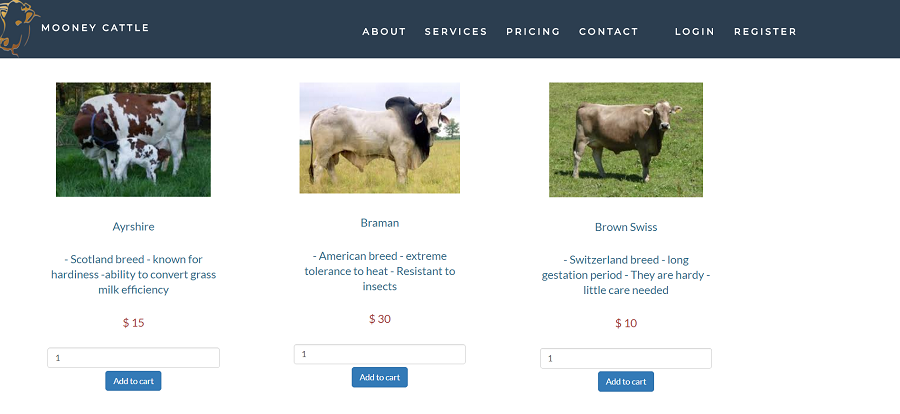
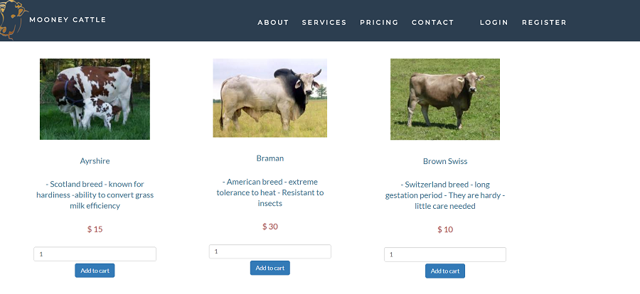

Web solutions with programing languages
Creating carts and Shopping summary
The class this happened in was Business Applications, Amalan Pulendran as the instructor. The goal was to create a website that contained carts using the ASP.NET MVC Model. MVC model defines the subject and contains the C# objects and methods that manipulate them. I created a website that included carts and shopping summary of orders. The summary methods render a view supplying the current cart. The summary action method implemented was to display the cart summary. The setback of this there were so many folders and subfolders, had unique naming, and if you misspelled any names then, you are on a long ride for the day. I did experience many errors from mistyping or not following right procedure to create the particular folder. This was fun because I shop a lot and wondered sometimes how the cart and summary information about the cart worked and what was behind it. Given a chance in the future to work with MVC, I would be open to the idea anytime. I can work with the MVC framework with no doubt in my mind.


Creating capstone web application
The capstone project entailed creating a web application that covers all requirements from three units, Namely; Web publishing (Amalan Pulendran), Database server (Paula Merns), and Advanced Topics (Paula Merns). I used PHP language to create the login for administration, carts, order details, updating imaging, editing them, and deleting them. I also created a login page for the seller to add buyers’ information; they can view, edit and delete records. Both the administration and seller login page are designed so that only the authorized accounts can access them. I am using a password hash for security purposes in the database. The project helped me to be imaginary, and be creative with the usage of PHP language. All the project need was one to be visionary and result oriented to complete the project. The most challenging part was creating the hash passwords, the ini file and the connecting all the files to a single file that uses the ini file. I look forward to using PHP and secure programing in future projects or assigned work.

 
